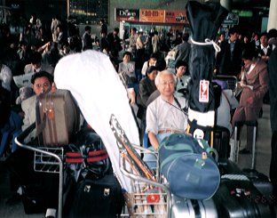

最新情報
1997 BS7H（ Scarborough Reef）DX-Pedition
DXペディションの全記録

【準備から出発前夜まで】今回のBS7・スカボロー行きの準備段階で、一番頭を悩ませたのは、その機器・装備の多さでした。DX-Peditionでは、多くのニーズに答えようとすると、当然の事ながら“道具”は比例して増え続けるものです。 今回のオペレーターの総勢は11人でしたが、日本からの参加は2人でした。 この事は、最も多くの機材を中国まで運ばなければならない日本勢にとっては、大きな問題となりました。 無線機器関係が多くなるのはともかく、今回はハムの運用とは直接関係のない「救命器具」を含む装備が多かったことです。 準備した装備のなかには、ゴムボートやテントなど、結果的に使わなかった物も多かったのですが、 どんな状況が待ち構えているか分からない“絶海の岩礁”から運用するためには、“生命安全”のための周到な準備が必要だったのです。 装備の“減量”には、当初予定していたサテライト運用も対象になりました。 八重洲無線のFT-736とアップリンク用の435MHZ・アンテナもリストから外されました。 広域に使用出来る衛星はAO-10だけになってしまったことと、V/UHFとは言え、 145/435MHZ帯のアンテナが設置出来るスペースの確保が難しいと判断されたためです。 最終的にはＨＦのアンテナが使える、ロシアのRS衛星を使い、少数ながらサテライト経由のQSOにも成功、実績だけ残す事が出来ました。 QSOを楽しみにされていた多くの局には残念な運用でしたが、状況から判断して結果的には今回の判断は正しかったと思われます。 次回以降のQRVを楽しみにして下さい。 最後は、予備の食料として持参する予定だった「インスタン・トラーメン」まで、減量の対象になりました。 しかし、これは失敗でした。 現地（もちろん、中国本土）で「カップラーメン」ぐらい調達できると考えたのが、間違いのもとでした。 広州市のマーケットに並んでいるのは、全て期限切れの中国製「カップラーメン」。 それも明らかに内容が日本製とは異なるものでした。 “背に腹は変えられぬ”と、仕方なく5個ほど買ったものの、後で船で試食した某氏の“腹具合”が悪くなり、 全て廃棄処分となってしまいました。 事前の打ち合わせで来日したチームリーダーのBA1OK・Wong氏が帰国する際に、 機器類のほとんどを運び出す事が出来たものの、われわれはまだ一人あたり90Kg近い荷物を持って出掛ける事になったのです。  【成田から北京経由、広州へ】“スキーケース”に押し込んだのが、アンテナとパイプとは知らず、成田空港の係官が不審そうに何度も「Ｘ線」を当てていました。スキーケースは中国入国のときに、北京空港で調べられるのではと心配していたのですが、 ここでは係官と目を合わせないようにして、荷物を載せたカートは無事通過。 "本物"のスキー客と思ったのかも？。 入国時のトラブルを見越して、予定より一日早く中国入りしたのだが、機械類を事前にあらかた送ってしまった後でもあり、 “調子抜け”するほどのフリーパスでした。 今度は先に送った全ての荷物が無事に広州まで届いてくれているのかが、急に心配になってきました。 4月26日の午後から北京のメンバー2人と合流、CRSA、CCTVの取材スタッフらを加えた総勢6人が、国内便で広州へと向いました。 北京→広州は、国内便とは言っても成田→北京間と同じ3時間のフライト。 この夜、香港経由で中国入りしていた米国のメンバー3人、中国のメンバー6人、 われわれ日本のメンバー2人の総勢11人の「1997 BS7H・DX-Peditionチーム」の全員が広州に集合。 翌27日、朝からメンバーが乗る事になっている中国国家海洋局の船を下見に出掛けました。 岸壁には2隻停泊しており、「中国海艦74」（船名は広州：1000トン）がメンバーが乗る船。 もう一隻の「中国海艦72」(900トン)が、一緒にスカボロー・リーフまで伴走する事になっているとのこと。 既に日本から送ってあった機械・装備類は、「中国海艦74」の船の倉庫に無事保管されていました。 本日からメンバー全員は、この船に泊り込む事になった。 出発予定は明日、28日の09:00時に決定。 翌日の出発を前に、街まで最後の買い出しに出掛ける。 Rockで夜間運用のために使う、240V用「電気スタンド」 や「飲料水（ミネラルウオーター）」、「非常食」など、etc...。 時間の合間に、BS7H／MMの運用に備え、HF用にクッシュクラフト製のバーチカル・R5、6m用4エレ、2mの7エレを甲板に設置した。 この時期の広州は、気温30度近く“真夏”の陽気。とにかく暑い！。 出港準備も整ったこの夜、中国国家海洋局・南海分局の一室で「黄岩島（Scarborough）動員大会」が、 BS7Hのメンバーを含む、乗組員全員が参加して行われました。 局長の挨拶に続き、今回のBS7HのチームリーダーのBA1OK・Wong氏が挨拶。 航海の目的、注意事項などがあり、30分ほどで終了。 準備万端整え、2段ベッドにもぐりこみ、就寝。 筆者(JA1RJU)は米国のメンバー3人と同室。 船室の丸窓からなま温かい風が少し入るだけで、一基の扇風機だけでエアコンも無く寝苦しい。  1997 BS7H index  BS7H 1997 Home Page BS7H 1997 Home Page |